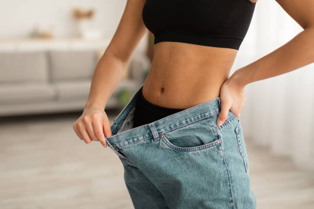
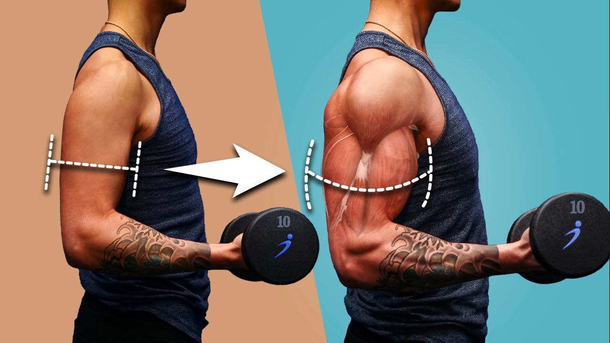
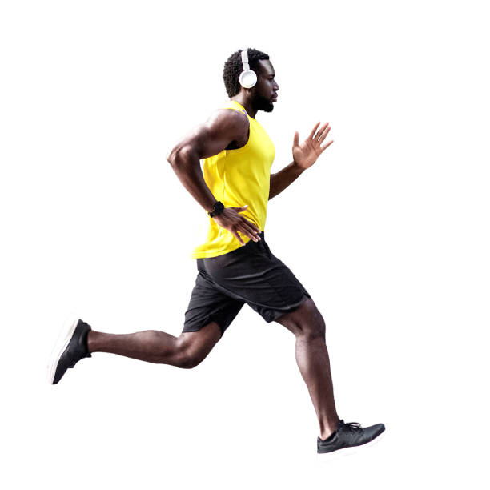

Welcome to Fitness Wellness—your ultimate guide for achieving the body and health you’ve always dreamed of! I’m Dion, the creator of this blog, and my goal is to guide and motivate you every step of the way on your fitness journey. Whether you're just starting out, or you're looking to take your fitness to the next level, you’ll find tips, workouts, and advice tailored to help you reach your goals. Together, we’ll build a healthier, stronger version of yourself! Let's get started and transform your fitness journey today!
Before we begin our fitness journey, let's set your goals. Whether your focus is on weight loss, muscle gain, or improving endurance, clear objectives will guide your progress and keep you motivated. Let’s define your goals first!
Your goal could be:
1. For Weight Loss
Achieve a Target Weight: Set a specific weight loss target, such as losing 10-15 pounds over the next 2-3 months. This goal can be broken down into smaller milestones, like losing 1-2 pounds per week, to maintain motivation and track progress.
Reduce Body Fat Percentage: Aim to decrease your body fat percentage by 5% within 3-6 months. Focus on combining strength training with cardio and a balanced diet to achieve this goal.
Establish Healthy Eating Habits: Commit to meal prepping and planning healthy meals to support your weight loss journey. Aim to prepare 3 healthy meals and 2 snacks per day, emphasizing whole foods, lean proteins, and plenty of fruits and vegetables.
2. For Muscle Gain
Increase Lean Muscle Mass: Set a goal to gain 5-10 pounds of muscle over the next 3-6 months. Incorporate a structured strength training program and ensure adequate protein intake to support muscle growth.
Lift Specific Weights: Aim to increase your strength in key lifts. For example, set a goal to bench press 150 pounds and squat 200 pounds within 12 weeks. Track your progress and adjust your training regimen accordingly.
Complete a Strength Training Program: Commit to a comprehensive strength training program (like a 5x5 program) for 8-12 weeks, focusing on progressive overload to continually challenge your muscles.
3. For Endurance Strengthening
Run a Specific Distance: Train to run a 5K (3.1 miles) within 8 weeks. Follow a structured running plan that gradually increases your distance each week to build endurance safely.
Improve Cardio Fitness: Set a goal to improve your cardiovascular fitness by completing a 30-minute steady-state cardio session (running, cycling, or swimming) at least 3 times per week. Track your heart rate to monitor improvements.
Participate in a Race: Sign up for a local race (like a 10K or half-marathon) to see your improvement.
Following these will ensure change to your body for the better good!



Calorie intake count and Diet Plan
For men, your ideal calorie intake depends on various factors, such as age and activity level. Most females at least 1,600 daily calories to maintain weight, while males may require at least 2,000. So in order to lose weight, eat less calories than what you usually eat.
Recommended Calorie Intake for Weight Loss
For weight loss, the general recommendation is to create a caloric deficit, which means consuming fewer calories than your body needs to maintain its current weight.
For women: A typical daily intake for weight loss is around 1,200-1,500 calories.
For men: The recommended intake is around 1,500-1,800 calories.
The specific caloric needs will vary based on your starting weight, activity level, and goals. You can consult a nutritionist to personalize this further.
A week diet plan for the Filipinos (you can improvise your own meal and use this as basis)
Day 1
Breakfast: Champorado and 1 boiled egg.
Grilled tilapia or bangus with steamed kangkong and brown rice.
Chicken tinola with malunggay, papaya, and a small serving of brown rice.
Day 2
Scrambled eggs with tomatoes and spinach.
Sinigang na hipon with vegetables and 1 cup brown rice
Roasted pork or cooked with airfryer.
Day 3
Oatmeal with banana slices and a teaspoon of honey and boiled egg.
Ginisang ampalaya with scrambled eggs and 1 cup of brown rice.
Grilled chicken breast and 1 cup of brown rice.
Day 4
Breakfast: Smoothie made with banana, spinach, and almond milk
Tinolang manok (chicken tinola) with malunggay and 1 cup of brown rice
Grilled bangus belly and 1 cup of brown rice
Day 5
Breakfast: Lugaw (rice porridge) with egg, garlic, and some veggies
Pork menudo (use lean cuts) with steamed vegetables and 1 cup brown rice
Grilled tilapia with ginisang sayote and 1 cup brown rice
Day 6
Suman with mango slices and a drizzle of coconut milk
Adobong kangkong and 1 cup of brown rice
Fish tinola with pechay and a small portion of rice
Day 7
Omelette with tomatoes, onions, and spinach
Pinakbet with lean pork and shrimp and 1 cup of brown rice
Grilled shrimp skewers and roasted vegetables
Foods to Avoid
1. Processed and Sugary Foods
2. Fried and Fast Foods
3. Salty Processed Foods:
Exercise Routines
A. Strength Training
Strength training is a crucial aspect of any fitness routine, helping to build muscle, strengthen bones, and boost metabolism. Here are some essential exercises to get you started:
Squats: Stand with feet shoulder-width apart, lower your body as if sitting in a chair, keeping your back straight. Aim for 3 sets of 10-15 reps.
Push-ups: Begin in a plank position, lower your body until your chest nearly touches the floor, then push back up. Modify by doing knee push-ups if needed. Aim for 3 sets of 8-12 reps.
Deadlifts: Using dumbbells or a barbell, hinge at the hips, keeping your back flat, and lift the weights by extending your hips and knees. Aim for 3 sets of 8-12 reps.
B. Cardio
Cardiovascular exercise, or cardio, is essential for heart health and burning calories. Here are some benefits and types of cardio to consider:
Running or Jogging: Great for building endurance and burning calories.
Cycling: Low-impact option that’s great for joint health.
High-Intensity Interval Training (HIIT): Short bursts of intense exercise followed by rest; highly effective for fat loss.
C. Rest
Muscle Recovery and Repair
During exercise, especially strength training, tiny tears occur in your muscle fibers. Rest allows your body time to repair these tears, which leads to stronger and larger muscles. Without adequate rest, your muscles don’t have the chance to recover fully, which can lead to overtraining and hinder your progress.
Preventing Injury
Constant exercise without rest increases the risk of injury. Overworking your muscles and joints can cause strain, inflammation, and stress fractures. Rest days reduce this risk, allowing your body to heal and prevent overuse injuries.
Improved Performance
Rest is essential for restoring energy reserves. After intense workouts, your glycogen levels (the stored energy in muscles) are depleted. Rest helps replenish these energy stores, improving your performance in the next workout. Without proper rest, fatigue sets in, and you may not be able to perform at your best.
Hello again, I'm Dion, and I’m here to share my story of how I transformed my body and my life, losing 40kg—from 100kg to 60kg—in just one year.
My weight-loss journey wasn’t easy, but it was definitely worth every step. I want to tell you how I made it happen and inspire you to believe that it’s possible to achieve your goals, no matter how big they may seem.
I started my journey when I realized how much my weight was affecting my health and confidence. At 100kg, everyday tasks were a struggle, and I knew I needed a change. My goal was to lose 40kg, and though it seemed overwhelming, I broke it into smaller milestones.
The key changes I made were with my diet and exercise:I focused on eating whole foods—lean proteins, vegetables, and healthy fats—while staying in a caloric deficit.
For exercise, I combined strength training and cardio, working out 4-5 times a week.
There were tough moments when progress was slow, but I kept myself motivated by tracking my weight and celebrating small wins. After a year of dedication, I hit my goal and felt stronger, healthier, and more confident than ever.
Before
After
Leave a Comment
Comments:
John Doe: I vouch that his method works!
Jane Doe: I love this fitness blog, it really helped me!
.jpg)
.jpg)
Leave a Comment
Comments:
John Doe: I vouch that his method works!
Jane Doe: I love this fitness blog, it really helped me!